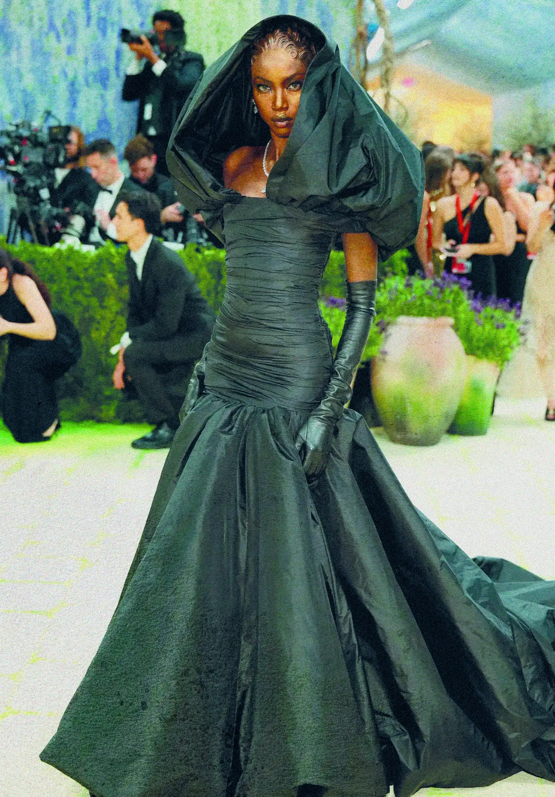

Los looks
que
hicieron
historia
Glamour, arte y alta costura: una lectura visual de los momentos que transformaron la alfombra del Met.
Explorá la Met Gala por año
Un recorrido por los looks que marcaron la historia de la Met Gala.
Looks más destacados
9 resultados

2026Más ediciones
Anok Yai
Fashion Is Art
Artículos y análisis
Tres maneras de interpretar el tiempo, el archivo y la transformación.
El archivo tiene más para contar.
Seguí explorando looks, análisis e historias de la Met Gala.